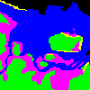

STEP:
Ecosystem Simualtion
ecosystems are cool!
#TODO:
sea, mudflats, tree, city
birds + fisheries > fishes > invertebrates
oil(furzey island) + boats(turist + fish) > water quality
seasonal migrations?
resuources:
http://www.pooleharbourstudygroup.org.uk
https://www.birdsofpooleharbour.co.uk/
http://www.individualecology.com/project/poole-harbour/
new bird
start
stop